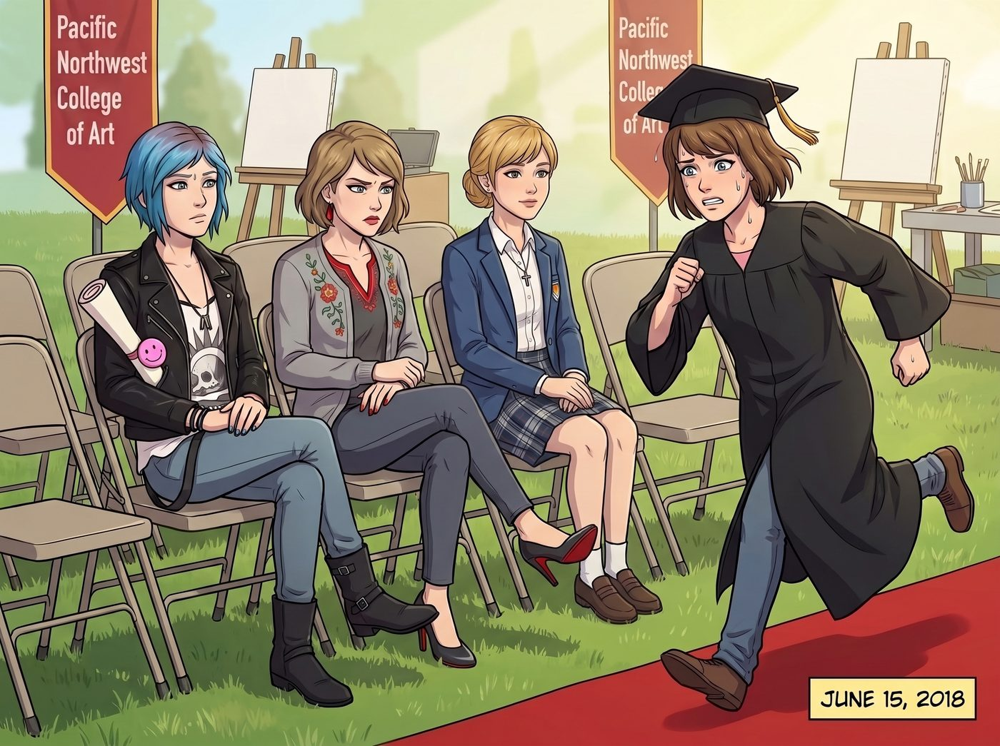

畢業典禮的品味制裁（倒敘）

2018年，波特蘭的初夏。太平洋西北藝術學院的畢業典禮現場，空氣裡彌漫著冷萃咖啡、定型噴霧和過度昂貴的油畫顏料味。
這是一個屬於雙保時間線的完美日子。
一、詭異的親友團
觀眾席的第三排，簡直是一個畫風詭異的親友團。
Chloe 穿著一件勉強算是正裝的黑色皮夾克，胸前的口袋裡隨意地塞著她那張社區學院的兩年制汽修與機電證書——那是她用粉色螢光筆自己畫了個笑臉的畢業證明；旁邊的 Victoria 踩著紅底高鞋，用一種審視即將破產的收購對象的眼神，嫌棄地看著學校的塑膠折疊椅，她剛剛以全A成績拿下了某頂級商學院的MBA；而 Kate 則笑得像個天使，胸前還掛著某個兒童心理輔導機構的年度最佳社工名牌。
然而，剛剛在後台穿好學士服的 Max，此時卻沒有半點即將畢業的喜悅。她正滿頭大汗地從紅毯邊緣狂奔過來，一把按住了坐在 Chloe 旁邊的 Lily 的平板電腦。
二、宣戰的理由
「Lily！停下！妳在幹什麼？！」Max 壓低聲音，驚恐地看著平板螢幕上那密密麻麻的、帶著國稅局徽標的代碼表。
Lily 穿著一件非常正式的深藍色小西裝，頭髮梳得一絲不苟。她抬起頭，推了推那副永遠反光的圓框眼鏡，用一種極度平靜、軟糯，彷彿在說今天天氣真好的語氣回答：
「我在啟動對太平洋西北藝術學院非營利性免稅資格的合法剝奪程序，Max 學姐。」
「……哈？」Max 愣住了。
「妳不能怪實習生，Max。」Chloe 在旁邊唯恐天下不亂地嚼著口香糖，「是這破學校先惹她的。他們剛才在廣播裡說，所有畢業生的作品如果要收錄進校史館，需要強制繳納一筆兩百五十美元的實體檔案維護費。實習生聽到這個就炸了。」
「這不僅僅是兩百五十美元的問題，」Lily 嚴肅地糾正 Chloe，手指雖然被 Max 按著，但依然試圖在邊緣滑動螢幕，「這是一種極度惡劣的隱性教育綁架。根據俄勒岡州消費者保護法案相關條款，這構成未經事先披露的強制消費。更何況，我剛才調閱了這所學校過去五年的財務報表。」
Lily 的鏡片閃過一道冷光：「他們把這筆所謂的維護費，作為流動資金轉移到了一個開曼群島的離岸信託裡，用來支付校長的私人遊艇保養。我現在只需點擊發送，將這份包含上百個違規項目的舉報信同時抄送給國稅局、聯邦教育部和州總檢察長辦公室。」
三、暗房大樓的和解書
「然後呢？！」Max 感覺自己的胃在抽筋。
「然後，作為舉報人兼受害者代表，」Lily 乖巧地眨了眨眼，「我已經為妳草擬了一份庭外和解協議。為了避免學校帳戶被全面凍結，校董會將在十分鐘內被迫簽字。他們會把學校那棟擁有百年歷史的頂級暗房大樓的產權，無償轉移到妳的名下。這樣妳就不用交那兩百五十塊錢了。」
旁邊的 Victoria 聽到這裡，忍不住優雅地鼓了鼓掌：「精準的資產併購打擊。Lily，如果哪天妳厭倦了現在的工作，我們家財務部隨時為妳敞開大門。」
「等等！等等！」Max 雙手死死捂住 Lily 的平板，「Lily，我們說好的！行政黑魔法絕對不能改變物理現實！妳這等於是在把我的母校給拆了啊！」
「我沒有改變物理現實，Max 學姐。」Lily 認真地反駁，語氣裡甚至帶著一絲邀功的委屈，「大樓依然會在那裡，校長依然可以呼吸。我只是改變了這棟建築在聯邦稅務局數據庫裡的所有者名稱。我們不碰管鉗，我們只講法律。」
「但如果學校破產了，我的畢業證書就變成一張廢紙了！」Max 崩潰地揉著頭髮，「聽著，Lily，我知道妳是為了我好。但我只想要一個正常的、平凡的、沒有聯邦調查局介入的畢業典禮！我不想當什麼暗房大樓的擁有者，我也不想讓校長去坐牢，我只想上台，拿走我的證書，然後我們一起去吃 Kate 烤的餅乾！好嗎？」
四、覆蓋指令
看著 Max 近乎哀求的眼神，Lily 敲擊鍵盤的手指終於停了下來。
那顆精密運轉的超級大腦似乎在處理某種邏輯衝突。在 Lily 的世界觀裡，有人試圖從她的家人身上不合理地拿走兩百五十塊錢，這等同於宣戰。而她的反擊方式，向來是把對方的整個生態系統連根拔起。
但現在，受保護對象發布了最高級別的覆蓋指令。
「……明白了。」Lily 輕輕嘆了口氣，指尖在螢幕上滑動了幾下，刪除了那封足以讓一所百年名校灰飛煙滅的郵件。「目標的情感需求優先級，高於資產回報率。我已終止制裁程序。」
Max 長長地鬆了一口氣，感覺自己剛才拯救了整個波特蘭的藝術界。
五、品味的最後倔強
「不過……」Lily 突然抬起頭，推了推眼鏡，嘴角勾起一抹極度純潔的微笑，「既然我們不能沒收他們的資產，那麼基於公平交易原則，我剛才順便調整了一下典禮音控室的播放清單。只要輸入一個小小的指令……」
「妳又幹了什麼？！」
「我在妳上台領取證書的那十秒鐘裡，把背景音樂的授權代碼，替換成了 Chloe 學姐樂團的重金屬新單曲。不用擔心，我已經幫學校自動繳納了不到一美元的版權費，完全合規，他們連起訴我們都做不到。」
Max 呆住了。Chloe 在旁邊發出了驚天動地的狂笑，用力拍著 Lily 的肩膀：「我就知道！實習生，妳他媽的就是個天才！」
就連一向端莊的 Kate，也忍不住摀住嘴偷笑起來。
六、泥石流般的重金屬
十分鐘後。當廣播裡莊嚴地念出「Maxine Caulfield」的名字，Max 紅著臉走上台，正準備從滿臉嚴肅的校長手中接過那份她夢寐以求的畢業證書時——
擴音器裡原本悠揚的畢業進行曲突然戛然而止。緊接著，一陣震耳欲聾的、充滿了失真吉他與狂野鼓點的重金屬搖滾，宛如泥石流一般席捲了整個藝術學院的草坪。
在台下一片死寂與震驚的教授和家長中，二號車廂的小團體成為了最亮眼的風景。Chloe 站在椅子上狂野地比著搖滾手勢；Victoria 戴著墨鏡冷酷地錄影；Kate 舉著寫有「Max 最棒」的牌子歡呼；而 Lily 則端坐在椅子上，膝蓋上放著平板電腦，深藍色的小西裝一塵不染，對著台上僵硬的 Max，露出了一個乖巧、深藏功與名的完美微笑。
對於 Lily 來說，既然不能用合規法條毀滅這所學校的財務，那就在合規的範圍內，毀滅這所學校的品味。這就是行政黑魔法師最後的倔強。